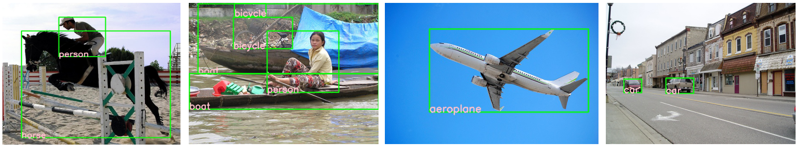

mindspore.dataset.utils.imshow_det_bbox¶
-
mindspore.dataset.utils.imshow_det_bbox(image, bboxes, labels, segm=None, class_names=None, score_threshold=0, bbox_color=(0, 255, 0), text_color=(203, 192, 255), mask_color=(128, 0, 128), thickness=2, font_size=0.8, show=True, win_name='win', wait_time=2000, out_file=None)[源代码]¶ 使用给定的边界框和类别置信度绘制图像。
- 参数：
image (numpy.ndarray) - 待绘制的图像，shape为<C, H, W>或<H, W, C>，通道顺序为RGB。
bboxes (numpy.ndarray) - 边界框（包含类别置信度），shape为<N, 4>或<N, 5>，格式为<N,X,Y,W,H>。
labels (numpy.ndarray) - 边界框的类别，shape为<N, 1>。
segm (numpy.ndarray) - 图像分割掩码，shape为<M, H, W>，M表示类别总数。默认值：None，不绘制掩码。
class_names (list[str], tuple[str], dict) - 类别索引到类别名的映射表。默认值：None，仅显示类别索引。
score_threshold (float) - 绘制边界框的类别置信度阈值。默认值：0，绘制所有边界框。
bbox_color (tuple(int)) - 指定绘制边界框时线条的颜色，顺序为BGR。默认值：(0,255,0)，表示绿色。
text_color (tuple(int)) - 指定类别文本的显示颜色，顺序为BGR。默认值：(203, 192, 255)，表示粉色。
mask_color (tuple(int)) - 指定掩码的显示颜色，顺序为BGR。默认值：(128, 0, 128)，表示紫色。
thickness (int) - 指定边界框和类别文本的线条粗细。默认值：2。
font_size (int, float) - 指定类别文本字体大小。默认值：0.8。
show (bool) - 是否显示图像。默认值：True。
win_name (str) - 指定窗口名称。默认值：”win”。
wait_time (int) - 指定cv2.waitKey的时延，单位为ms，即图像显示的自动切换间隔。默认值：2000，表示间隔为2000ms。
out_file (str, 可选) - 输出图像的文件路径，用于在绘制后将结果存储到本地。默认值：None，不保存。
- 返回：
numpy.ndarray，带边界框和类别置信度的图像。
- 异常：
ImportError - 当未安装opencv-python库。
AssertionError - 当 image 的格式不为<H, W, C>或<C, H, W>。
AssertionError - 当 bboxes 的格式不为<N, 4>或<N, 5>。
AssertionError - 当 labels 的格式不为<N, 1>。
AssertionError - 当 segm 的格式不为<M, H, W>。
AssertionError - 当 class_names 的类型不为list、tuple或dict。
AssertionError - 当 bbox_color 不为(B, G, R)格式的tuple。
AssertionError - 当 text_color 不为(B, G, R)格式的tuple。
AssertionError - 当 mask_color 不为(B, G, R)格式的tuple。
imshow_det_bbox在VOC2012数据集的使用图示：
样例：
>>> import numpy as np >>> import mindspore.dataset as ds >>> from mindspore.dataset.utils.browse_dataset import imshow_det_bbox >>> >>> # Read Detection dataset, such as VOC2012. >>> voc_dataset_dir = "/path/to/voc_dataset_directory" >>> dataset = ds.VOCDataset(voc_dataset_dir, task="Detection", shuffle=False, decode=True, num_samples=5) >>> dataset_iter = dataset.create_dict_iterator(output_numpy=True, num_epochs=1) >>> >>> # draw dataset >>> for index, data in enumerate(dataset_iter): ... image = data["image"] ... bbox = data["bbox"] ... label = data["label"] ... # draw image with bboxes ... imshow_det_bbox(image, bbox, label, ... class_names=['aeroplane', 'bicycle', 'bird', 'boat', 'bottle', 'bus', 'car', 'cat', ... 'chair', 'cow', 'diningtable', 'dog', 'horse', 'motorbike', 'person', ... 'pottedplant', 'sheep', 'sofa', 'train', 'tvmonitor'], ... win_name="my_window", ... wait_time=5000, ... show=True, ... out_file="voc_dataset_{}.jpg".format(str(index)))